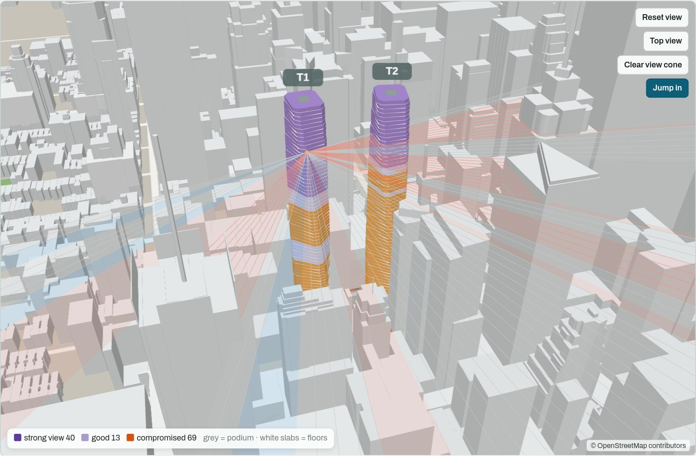
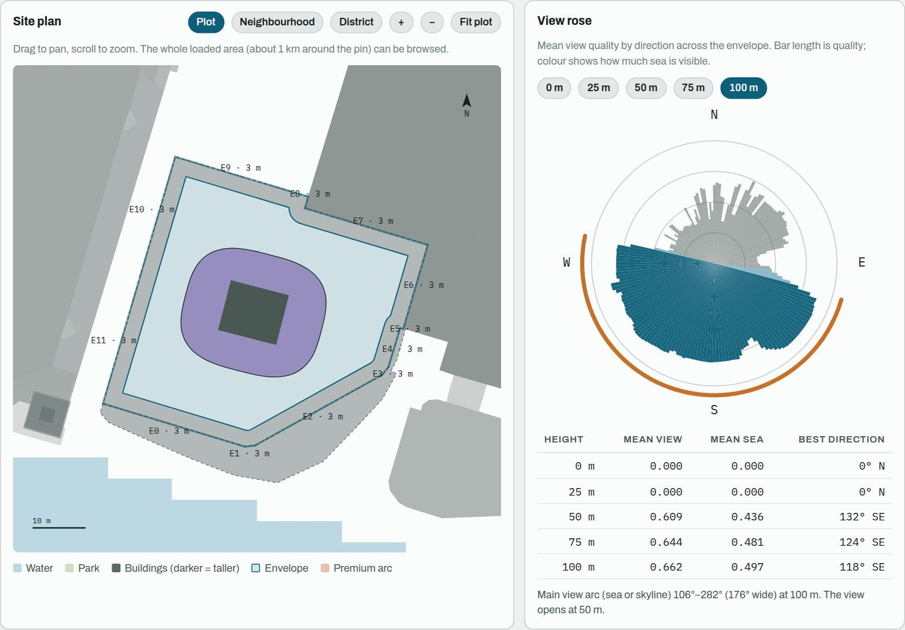
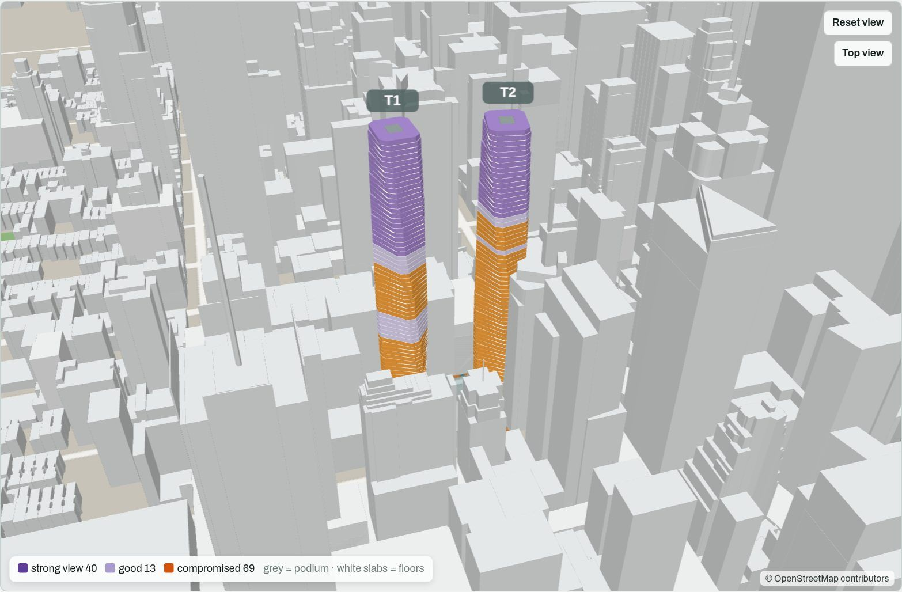
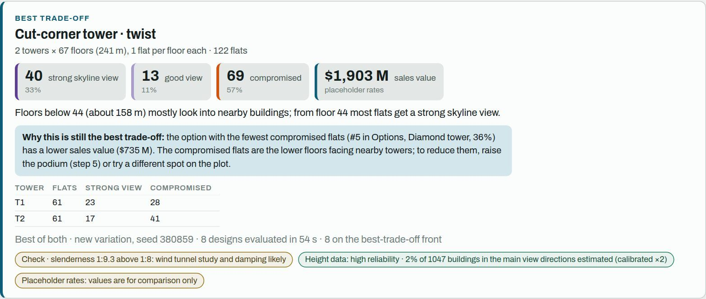
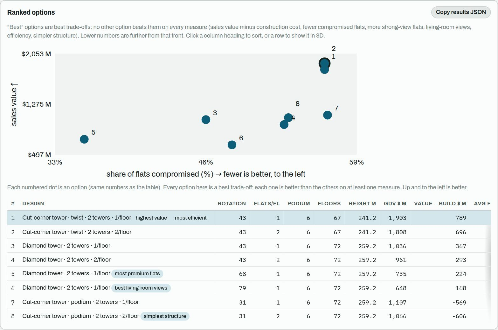
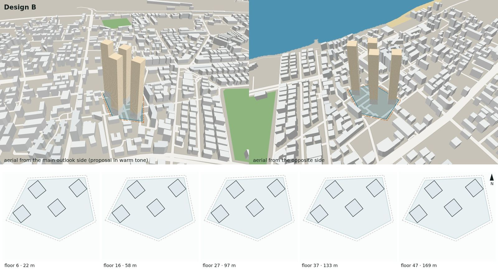
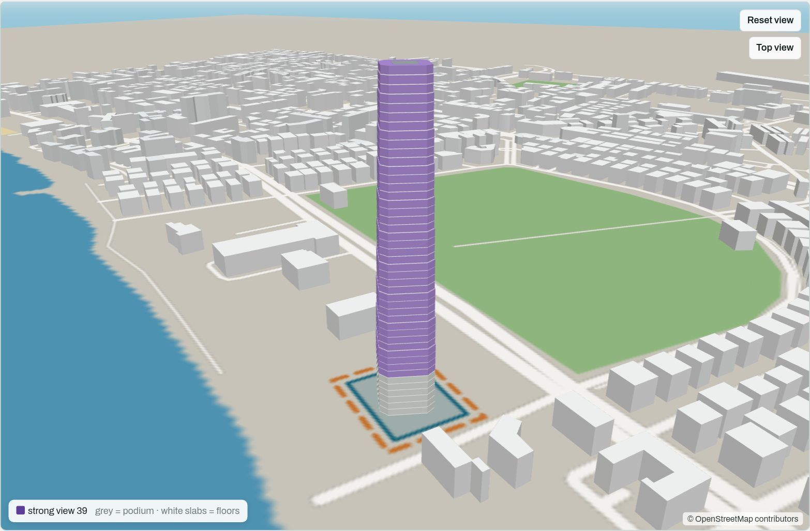
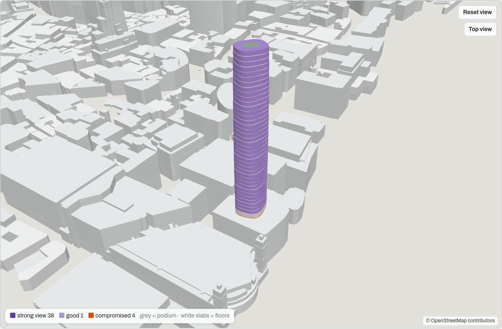

Pin a plot and, in under a minute, test hundreds of tower designs against the real city: which flats see the sea or the skyline, which look straight into a neighbour, and what that does to sales value.

In high-rise residential markets, the same flat sells very differently depending on what it looks at. Yet the tower's shape is usually fixed long before anyone tests which flats will actually see the view.
Tower shape, height and orientation are set at feasibility stage, from rules of thumb and a handful of sketches.
A proper view analysis means a 3D model of the city and a specialist. It is done for one or two options, weeks later.
Flats that look into a wall, towers that face each other, the best view on a service core. They are found when it is too late to change.
Pin a location or upload a georeferenced DXF of the plot. The surrounding buildings, parks, water and coastline load from OpenStreetMap, with building heights calibrated against mapped towers.

Four ways to explore: shapes you choose, the best of a 540-typology library modelled on built precedents, newly invented towers, or the recommended mix of both. Every candidate is checked against hard rules (envelope, height, core, structure, overhangs) and its views are ray-cast floor by floor.

Each option shows how many flats get a strong view, which are compromised and why, and where the view opens up. Click any floor to see its view cone, or "jump in" to stand at the window.

The options chart plots sales value against the share of compromised flats. Every numbered dot is a tower the engine tested and explained, so the trade-off is visible at a glance.

Views are ray-cast through a 3D model of the real city, for every flat's living room and bedrooms. Each class comes with its reason: what blocks the view, how close it is, and from which floor the view opens.
In blind tests, a model of visible form predicted which of two designs reviewers preferred 70% of the time. View and value numbers alone predicted it 53% of the time. The tool uses the engine for the numbers and the model to break near-ties.
Towers are built from floor-by-floor moves: twist, taper, stagger, terraces, corner gardens, podium and crown. Each move draws on precedents such as Cayan Tower, 56 Leonard and Kanchanjunga, and new combinations are invented for each site.
No install and no server: the plot, drawings and results stay on the user's device. Every choice is explained, and every run can be replayed exactly from its seed.
The reviewers are AI-simulated personas, each with a distinct practice and point of view. Each round fed the next version of the engine and the interface, and every comparison was blind and judged from images only.
| Architect review round (blind, 456 sites) | Preferred | Rating /10 |
|---|---|---|
| 1 · Rule-based library vs learned generator | 239 vs 162 | 5.85 vs 5.58 |
| 2 · Hybrid v1 vs each reviewer's own earlier favourite | 198 vs 205 | 5.99 vs 5.97 |
| 3 · Hybrid v2 vs earlier favourite | 129 vs 206 | 5.88 vs 6.06 |
| 4 · Hybrid v3 vs earlier favourite | 141 vs 148 | 5.90 vs 5.85 |
| 4 · Newly invented towers vs earlier favourite | 102 vs 75 |
Reviewers were AI-simulated personas: architects with distinct practices, influences and temperaments, and UI/UX designers. They judged rendered images only. This is a structured, reproducible design review, not market validation. Studies with practising architects and developers are the next milestone. Prices in the demo are placeholders.
In round 4, all 50 designers rated the current version above the previous release. The new variant won 11 of the 12 interface A/B tests.

What a reviewer saw: the proposal in context, with no numbers.
Five city districts come preloaded, each with local currency, typical limits and its own view rules: the sea in Mumbai, the skyline in Manhattan, the Thames in London. Any other location loads live from OpenStreetMap.


3D context, typology search, view grading, explained verdicts, CAD and board-pack exports, five cities.
Pilots with developers and practising architects; view predictions checked against photos taken from real windows.
Prices calibrated from local sales comparables, so the view premium is measured rather than assumed.
Room-level layouts, IFC/Revit export, team workspaces and more cities.
Pick a city, press "Run search", click any floor to see its view, and press "Run" again to see a new set of designs.